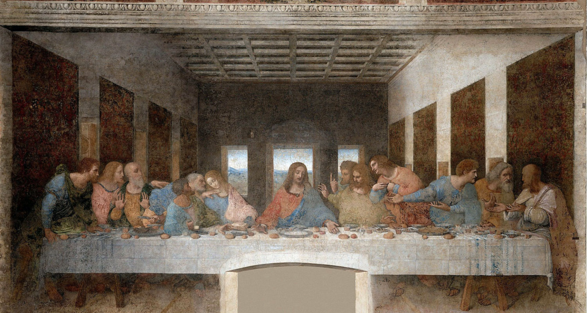

“Incredible! Three months for booking ”
Paul, Italian
Tripadivsor, 2016
“Underestimate and in a hurry. Leonardo deserves much more!”
Jane, Australian
Tripadvisor, 2016
“So beautiful but too short ”
Italian woman, 30 years old
during the visit
The painting was on a thin exterior wall so the effects of humidity were felt more keenly. Because of the method used, the painting was starting to flake at an early year of 1517.
A first restoration was attempted in 1726 by Michelangelo Bellotti, who filled in missing section with oil paint. This repair did not last well.
During World War II, on August 15, 1943, the refectory was sruck by Allied bombing; sandbagging prevented the painting from it.
The major restoration was guided by Brambilla Barcilon from 1978 to 1999. The refectory was converted to a sealed, climate-controlled environment. This change makes the room into a dark, less natural light space. After it was returned to display, considerable controversy was aroused by the dramatic changes in colors and some facial shapes.
Last Supper in 1970s
Last Supper in 1990s
Paul, Italian
Tripadivsor, 2016
Jane, Australian
Tripadvisor, 2016
Italian woman, 30 years old
during the visit
Exhibition
Cloister of Frogs
Bramante’s Sacristy
Sforza Castle
Pietà Rondanini